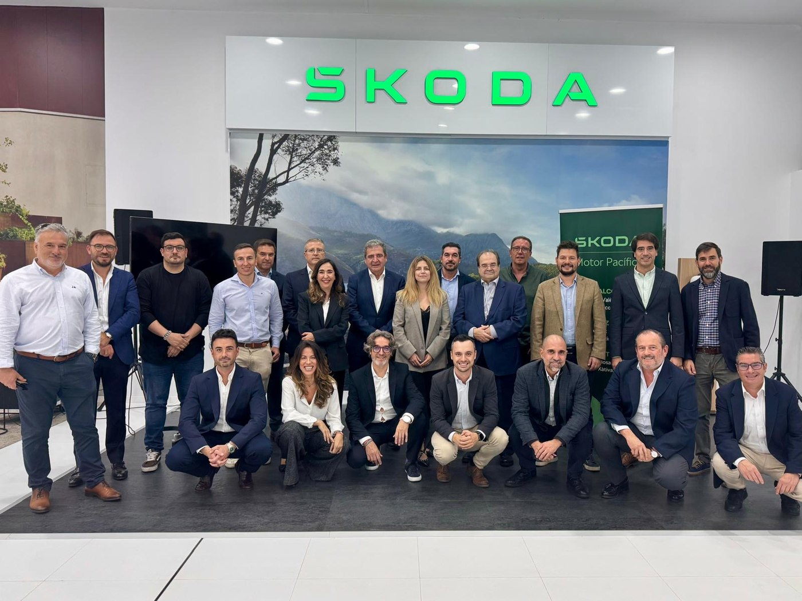

Organización, relación con prensa y cobertura en redes de la inauguración del nuevo concesionario Škoda Motor Pacífico en Alzira: un acto que arrancó con una caravana desde Xàtiva y reunió a directivos de Škoda España, Grupo Motor Pacífico, Grupo Ibérica y a las autoridades locales.
01 — El reto
La apertura del concesionario de Alzira no era un acto de un solo punto: implicaba mover a prensa y directivos desde las instalaciones de Xàtiva en una caravana hasta el nuevo espacio, encajar los tiempos de Škoda España, Grupo Ibérica y las autoridades de Alzira, y generar contenido en el momento sin perder ninguno de los instantes clave del acto. Trabajando junto al resto del departamento de marketing, mi parte fue que la logística, la prensa y las redes encajaran a la vez.
02 — Qué hice
Coordinación de horarios y del desplazamiento conjunto de prensa y directivos entre las instalaciones renovadas de Xàtiva y el nuevo concesionario de Alzira.
Punto de contacto durante el acto con los medios que cubrieron la inauguración, y apoyo en la nota de prensa oficial del evento.
Fotografía y vídeo del acto en Xàtiva y Alzira para tener material propio con el que construir el contenido posterior.
Edición y publicación en Instagram del resumen de la jornada, ya con el concesionario de Alzira abierto.
03 — El día de la inauguración
El 13 de noviembre de 2025, Škoda Motor Pacífico inauguró su nuevo concesionario en Alzira, gestionado por Motor Pacífico Premium (Grupo Ibérica). Por la mañana, prensa y directivos hicieron el recorrido desde las instalaciones renovadas de Xàtiva hasta Alzira; por la tarde, un acto interno reunió al equipo para celebrar el nuevo paso. Al acto asistieron Fidel Jiménez de Parga (director general de Škoda España) y Carlos Calatayud (director de Ventas), Fernando Núñez Rebolo (presidente de Grupo Motor Pacífico y Grupo Ibérica) y Miguel Buendía (CEO de Grupo Motor Pacífico), junto con Alfons Domínguez Gento (alcalde de Alzira), Laura Sáez Martínez (diputada de Hacienda) y Marián Cano (consejera de Innovación, Industria, Comercio y Turismo).
"Alzira y Xàtiva suman más de 75.000 habitantes y representan zonas de gran dinamismo." Fidel Jiménez de Parga, director general de Škoda España

04 — Repercusión en medios y redes
El acto tuvo cobertura en medios locales y del sector, además de la comunicación oficial de la marca.